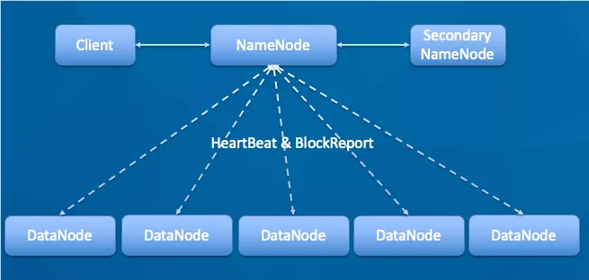
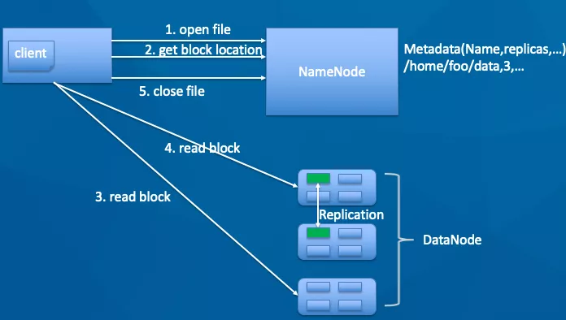
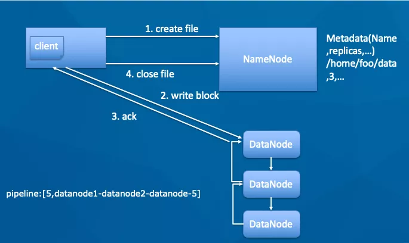
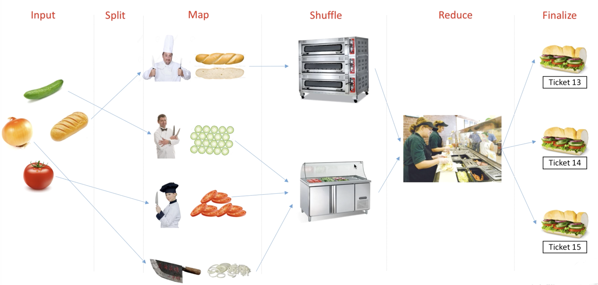
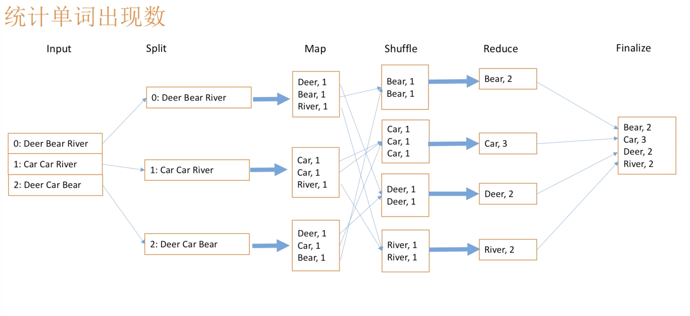
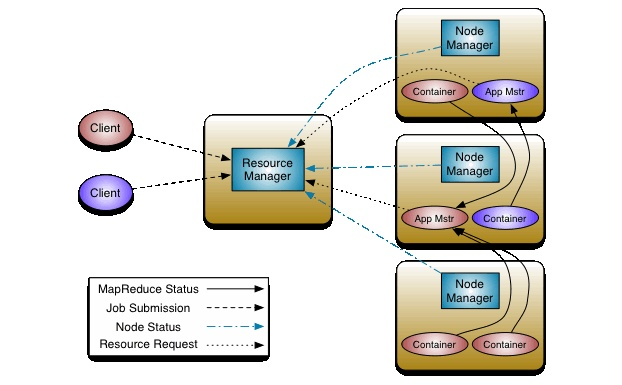

一提到大数据, 可能大家首先就会想到Hadoop, 这里将会简单介绍Hadoop的基本原理, 在Linux上的安装过程, 以及一些基础的文件操作方式.
Hadoop简介
为什么Hadoop会成为大数据框架的首选呢? 可以从其两个主要的功能说起:
- HDFS
- MapReduce
HDFS
HDFS(Hadoop Distributed File System)被设计成适合运行在通用硬件(commodity hardware)上的分布式文件系统. 它和现有的分布式文件系统有很多共同点, 但同时, 它和其他的分布式文件系统的区别也是很明显的. HDFS 是一个高度容错性的系统, 适合部署在廉价的机器上. HDFS能提供高吞吐量的数据访问, 非常适合大规模数据集上的应用.

如上图, 其中各个组件分别为:
- Client: 客户端.
- NameNode: 对应master, 它相当于是一个管理者, 存储元数据.
- DataNode: 对应slave, 执行操作并存储实际数据.
- SecondaryNameNode: 用于辅助NameNode.
HDFS读写文件的方式如下两图, 本质上都是先与NameNode进行互动, 然后再在DataNode上进行操作, 最后再向NameNode报告.
读文件:

写文件:

对于HDFS的文件操作命令, 与Linux的文件操作命令非常类似, 在后面会进行介绍.
总结一下HDFS的优缺点:
- 优点:
- 支持海量数据存储.
- 高容错性.
- 流式数据访问.
- …
- 缺点:
- 不能做到低延迟数据访问.
- 不适合大量的小文件存储.
- 不支持直接修改文件.
- …
MapReduce
MapReduce是一种针对处理大数据的算法范式, 某种意义上来说, 就是一种分治算法.
而所谓分治算法, 分而治之, 先将大问题转化为一个个小问题, 再将小问题逐一解决后, 汇合成大问题的结果.
MapReduce算法, 具体来说可以有如下一些步骤:
- Inout
- Split
- Map
- Shuffle
- Reduce
- Finalize
比如下面一个餐馆做饭的栗子:

首先将原材料(Input)分发(Split)给各个厨师, 然后各个厨师对其进行加工(Map), 然后按菜的品类进行整理(Shuffle), 接着用整理好的单品组合制作成一份份快餐(Reduce), 最后用户点菜时就将对应快餐送出(Finalize).
再举一个统计单词出现次数的栗子吧:

以上的栗子都是比较简单直观的, 但是对于一些复杂的任务, 可能要执行多次交替的Map操作和Reduce操作, 并且一般用Java来编写具体的代码. 对于非专业人员来说, 是有一定难度的, 正是基于此, 才有了后面的Hive.
YARN
上面说到了HDFS是分布式文件系统, MapReduce是运行在上面的算法, YARN的英文全称为Yet Another Resource Negotiator, 意思是”另一种资源调度器”. 那么为什么会有YARN呢?
直接的原因, 就是在Hadoop1.x中, 在MapReduce时, JobTracker负责的事情太多了, 接受任务, 调度资源, 监控TaskTracker运行情况. 这样实现简单, 但是容易出错, 也不容易扩展.
因此在后来的Hadoop2.x中, 将JobTracker进行了拆分, 开发出了YARN. 其实Hadoop能有今天的地位, YARN功不可没, 正因为有了YARN, 更多的算法框架(如Spark)可以接入到HDFS中. HDFS可能不是最优秀的分布式文件系统, 但却是应用最广泛的.
接下来详细介绍YARN的架构:

Container
容器在YARN这里是对(计算)资源做的一种抽象, 比如将一定的CPU核数和内存封装成一个个的容器.
同时, 容易由NodeManager启动和管理, 并被其监控; 被ResourceManager进行调度.
ResourceManager
从名字上看, 就知道RM是负责资源管理的, 整个系统只有一个RM, 其包含两个主要的组件:
Scheduler
定时调度器, 本质是一种策略或者算法. 当Client提交一个任务时, 它会根据所需要的资源和当前集群的资源状况进行分配. 它只负责分配资源, 不做监控以及状态跟踪.
ApplicationManager
应用管理器, 每当Client提交一个Application时, 就会新建一个对应的ApplicationManager, 由这个AM去向RM申请容器资源, 获得资源后将要运行的程序发送到容器运行, 并进行监控.
NodeManager
节点管理器是每台机器上的代理, 负责容器的管理和监控, 并向ResourceManager/Scheduler提供资源使用情况.
当提交一个任务(Application)到YARN时, 后续整个流程如下:
- Client向RM提交Application.
- RM向NM通信, 为该Application分配第一个容器, 并在这个容器上运行AM.
- 在AM启动后, 对Application进行拆分, 拆分出来的task可以运行在一个或者多个容器中. 然后向RM申请运行程序的容器, 并定时向RM发送”心跳”.
- 申请到容器后, AM会去和对应的NM通信, 将Application的task发送到对应NM的容器运行.
- 容器中运行的task也会向AM发送”心跳”, 当程序运行完成后, AM向RM注销并释放容器资源.
安装
这里不配置真正分布式的Hadoop, 一来比较麻烦, 需要多台电脑或者多个虚拟机, 二来更多的是想使用基于Hadoop的Hive等大数据套件.
所以这里安装的是伪分布式, 意思就是其系统是按真正的分布式去运作的, 不过所有流程都在一台电脑上执行. 这里的操作系统为Ubuntu.
由于Hadoop的底层语言为Java, 所以需要事先安装Java.
1 | sudo apt-get update |
同时还要配置JAVA_HOME, 寻找Java安装路径:
1 | which java |
编辑.bashrc:
1 | # java |
在这里选择要下载的Hadoop版本, 我选择的是2.10.0版本. 下载好以后解压到/usr/local/hadoop.
下面是修改配置文件, Hadoop的配置文件一般位于/usr/local/hadoop/etc/hadoop/, 首先是hadoop-env.sh:
1 | # The java implementation to use. |
此时可以测试一下Word Count的小程序.
1 | $ cd /usr/local/hadoop/share/hadoop/mapreduce |
若执行成功, 则会生成一个output文件夹, 里面有计数的结果.
或者可以执行计算圆周率的小程序:
1 | $ hadoop jar hadoop-mapreduce-examples-2.10.0.jar pi 16 100000 |
接下来搭建伪分布式集群, 包括三个核心配置文件core-site.xml, hdfs-site.xml, yarn-site.xml.
修改core-site.xml:
1 | <configuration> |
修改hdfs-site.xml:
1 | <configuration> |
修改yarn-site.xml:
1 | <configuration> |
修改mapred-site.xml:
1 | <configuration> |
修改从节点配置文件slaves:
1 | localhost |
配置完成, 格式化NameNode:
1 | hdfs namenode -format |
开启守护进程:
1 | 开启 |
通过jps查看Java进程的状态:
1 | jps |
再启动YARN:
1 | 启动YARN |
通过jps查看Java进程的状态:
1 | $ jps |
此外, 可以通过start-all.sh一次性启动, stop-all.sh一次性关闭.
在浏览器上可以在IP:50070查看HDFS的情况, 这里IP是NameNode对应的地址.
同时, 还可以在IP:8088查看YARN的情况.
使用
这里暂时就不讲怎么写MapReduce程序了, 虽然用其它一些脚本语言(如Python)也能够写, 但是还是比较麻烦.
主要介绍HDFS的一些命令行操作, 其实感觉和Linux的文件系统命令很类似. 输入hadoop fs可以查看到相关命令说明. 下面是一些常用的命令.
文件夹.
1
2
3
4
5
6# 创建文件夹, 一般首先创建/user/user_name作为默认目录
$ hadoop fs -mkdir -p /user/user_name
# 删除文件夹
$ hadoop fs -rm -r -f path
$ hadoop fs -rmdir path文件.
1
2
3
4
5
6
7
8
9
10
11
12
13
14# 将Client端的文件传到HDFS中, 若文件存在, 可使用-f参数覆盖
$ hadoop fs -put -f local_file hdfs_path
# 从HDFS中获取文件到Client端
$ hadoop fs -get hdfs_file local_path
# 复制
$ hadoop fs -cp path_0 path_1
# 移动
$ hadoop fs -mv path_0 path_1
# 删除
$ hadoop fs -rm path查看.
1
2
3
4
5
6
7
8
9
10
11
12# 查看指定目录下文件
$ hadoop fs -ls path
# 查看指定目录已使用空间
$ hadoop fs -du -h path
# 查看指定目录剩余空间
$ hadoop fs -df -h path
# 查看文件内容
$ hadoop fs -cat file
$ hadoop fs -tail file